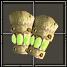
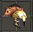
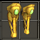

| 中文名称 | 套装奖励 | 组件名称 | 组件种类 | 组件属性 | 需要力量 | 需要敏捷 | 需要智力 | 需要等级 | 英文名称 |
| 巫师的制服 |
2 件奖励： +15% 生命吸取 10% 吸取生命抵抗 3 件奖励： +25% 生命吸取 30% 吸取生命抵抗 4 件奖励： +35% 生命吸取 50% 吸取生命抵抗 全套奖励： +50% 生命吸取 100% 吸取生命抵抗 +65 生命 +55 法力 |
死亡护腕  |
臂(法) |
30 护甲 |
0 | 72 | 116 | 9 | Necromancer's Habiliment |
|
死亡之冠  |
头(法) |
30 护甲 |
0 | 72 | 116 | 9 | Necromancer's Habiliment | ||
|
巫师胫甲  |
腿(法) |
30 护甲 |
0 | 72 | 116 | 9 | Necromancer's Habiliment | ||
巫师法袍 |
胸(法) |
30 护甲 |
0 | 72 | 116 | 9 | Necromancer's Habiliment | ||
巫师之杖 |
杖 |
26 ~ 32 基本冰冷伤害 |
0 | 0 | 144 | 9 | Necromancer's Habiliment |
|